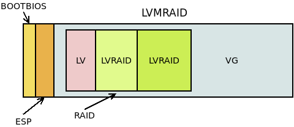

5.4.2.1.2. LVM¶
Desde su versión 2, LVM permite la creación y gestión de dispositivos RAID como si de volúmenes lógicos se tratara. Usa internamente el mismo driver del núcleo que mdadm, por lo que pueden contituirse los mismo niveles de RAID: 0, 1, 4, 5, 6 y 10. Es, pues, una buena alternativa si nuestra intención es crear volúmenes lógicos con redundancia, en vez de crear el RAID y definir después sobre el dispositivo virtual resultante un grupo de volúmenes. La gestión de volúmenes lógicos redundantes tiene su propia página de manual: lvmraid(7). Esta solución tiene algunas diferencias frente a definir LVM sobre un RAID:

En este caso, la tercera partición del disco, contiene un dispositivo RAID[1] construido con mdadm que constituye todo él un grupo de volúmenes sobre el cual se definen los volúmenes lógicos. En cambio, si creamos dispositivos lógicos con RAID usando LVM:
La tercera partición es directamente un grupo de volúmenes dentro de los cuales pueden crearse volúmenes lógicos, reduntantes[2] o no. Las soluciones no son exactamente equivalentes:
En la primera:
- Sólo hay un dispositivo RAID.
- Todos los volúmenes lógicos está en el RAID.
- Es aconsejable que los dispositivos que constituyen el RAID sean iguales. En consecuencia, replicaremos la misma estructura en todos los discos y haremos que participen en el RAID las terceras particiones de cada cual.
En la segunda:
Hay un dispositivo RAID por cada volumen lógico redundante.
No todos los volúmenes lógicos tienen por qué ser dispositivos RAID.
Como dentro del grupo de volúmenes hay volúmenes lógicos redundantes y volúmenes no redundantes, los volúmenes físicos que lo constituyan no tienen que tener igual tamaño. Por ejemplo:
Por hacer
Hacer un esquema.
Por tanto, podemos no replicar las tablas de particiones en los restantes discos físicos o incluso no hacer tablas de particiones en ellos. Esto hará no arrancable esos discos, pero la solución será interesante de todas formas si nuestro interés está en hacer más improbable la pérdida de algunos datos o mejorar el rendimiento en el acceso y no tanto en asegurar la disponibilidad del sistema.
Alternativamente, podríamos hacer que todos los volúmenes lógicos fueran redundantes. En es caso, los volúmenes físicos que constituyen el RAID sí sería acoonsejable que fueran iguales y, por tanto, tendríamos un caso equivalente a la primera solución. Consecuentemente, podríamos particionar de igual manera los discos y hacerlos todos arrancables.
5.4.2.1.3. Preliminares¶
Preparemos las particiones de un disco a semejanza de como el que preparamos para mdadm:
# sgdisk -a 8 -n "0:40:2047" -t "0:0xef02" -c "0:BOOTBIOS" \
-a 2048 -n "0:2048:+50M" -t "0:0xef00" -c "0:EFI" \
-N 0 -c "3:LVM" -t "3:0x8e00" /dev/loop0
Para el segundo disco, podemos hacer dos cosas:
- Copiar la tabla si nuestra intención es crear una solución equivalente a la hecha con mdadm. En esta solución todos los volúmenes lógicos son redundantes.
- Añadir directamente el segundo disco al grupo de volúmenes, poque nuestra intención es mezclas volúmenes redundantes con volúmenes que no lo son. En este caso, sólo el primer disco será arrancable.
Ilustramos la creación y gestión de RAIDs con esta segunda solución. Por tanto:
# pvcreate /dev/loop0p3
# pvcreate /dev/loop1
# vgcreate VGraid /dev/loop0p3 /dev/loop1
# vgs VGraid
VG #PV #LV #SN Attr VSize VFree
VGraid 2 0 0 wz--n- 940,00m 940,00m
Tenemos casi un grupo de volúmenes de casi 1GiB de capacidad. Lo que falta es, descontados los metadatos, el espacio que ocupan las dos particiones de arranque del primer disco.
5.4.2.1.4. Creación¶
Para crear volúmenes lógicos redundantes, basta con usar lvcreate, aunque con las opciones adecuadas. Por ejemplo, empecemos procrear un volumen no redundante:
# lvcreate -L 100M -n uno VGdebian
# vgs VGraid
VG #PV #LV #SN Attr VSize VFree
VGraid 2 1 0 wz--n- 940,00m 840,00m
# lvs VGraid
LV VG Attr LSize Pool Origin Data% Meta% Move Log Cpy%Sync Convert
uno VGraid -wi-a----- 100,00m
Como es natural, ahora hay 100MiB libres menos.
Notas al pie
| [1] | Obviamente habrá al menos otros disco idéntico para que tenga sentido cualquier tipo de RAID. |
| [2] | Entiéndase por volumen lógico redundante un volumen lógico que contituye un RAID, incluo aunque sea de nivel 0, el cual no es redundante. |